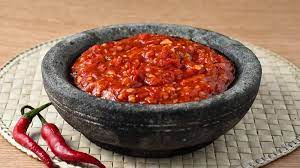

Sambal

Description
Sambal or loosely translated as chili sauce, is deeply rooted in Indonesian cuisine. The term sambal simply means chili sauce, usually made with either red or green chili peppers. The peppers are usually also made with other aromatics such as shallots, garlic, shrimp paste (not always), and sometimes you’ll also see herbs like kaffir lime leaves, lemongrass in certain sambal.
Ingredients
- SHALLOTS
- GARLIC
- RED CHILI
- TOMATO
- COOKING OIL
- LIME JUICE
- SUGAR
- KAFFIR LIME LEAVES (OPTIONAL)
Steps
- GRIND THE INGREDIENTS: Place shallots, chili (if using fresh chili), tomato, and garlic in a food processor and finely or roughly chop them. It’s up to you if you want it more fine consistency or more rustic
- STIR FRY : Preheat a skillet with cooking oil. Add the ingredients you chopped above (if using premade garlic sambal chili, don’t add it in yet) and kaffir lime leaves and stir fry until fragrant, about 3 minutes.After that you can add in the premade garlic sambal chili (if not using fresh chili), stir fry another minute
- ADD LIME JUICE AND SEASONINGS: Squeeze in lime juice, salt and sugar to your taste. Continue stir fry until the mixture is dry
- TO MAKE A BALADO DISH: If you are preparing a balado dish, this is the point you add your other cooked ingredient in and toss with the balado sauce, otherwise, remove from the heat and serve as a condiment to your meal